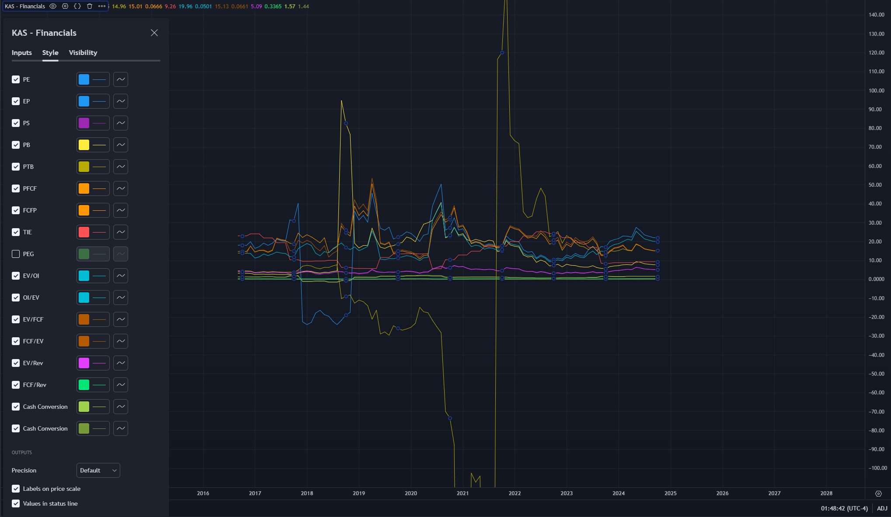
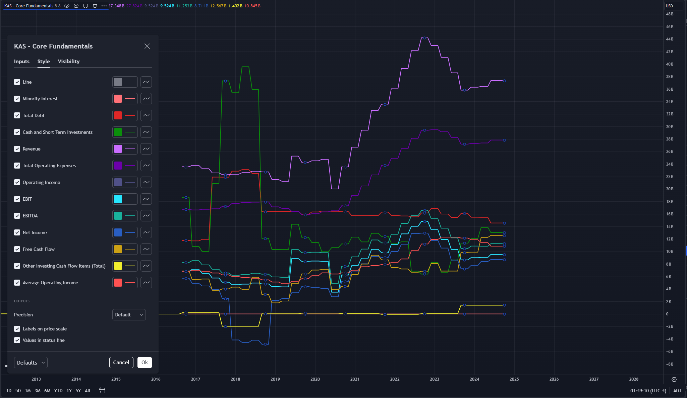
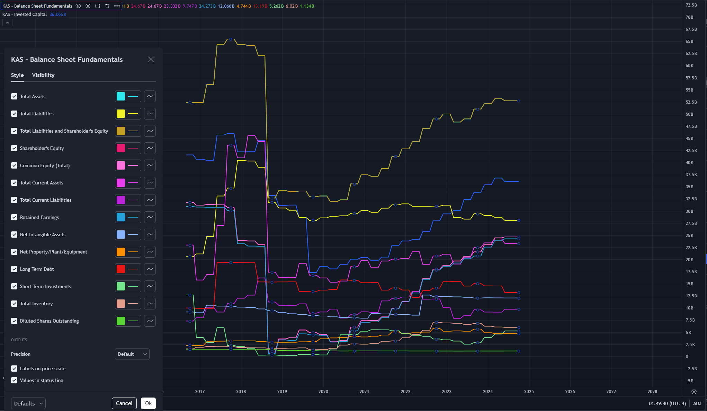
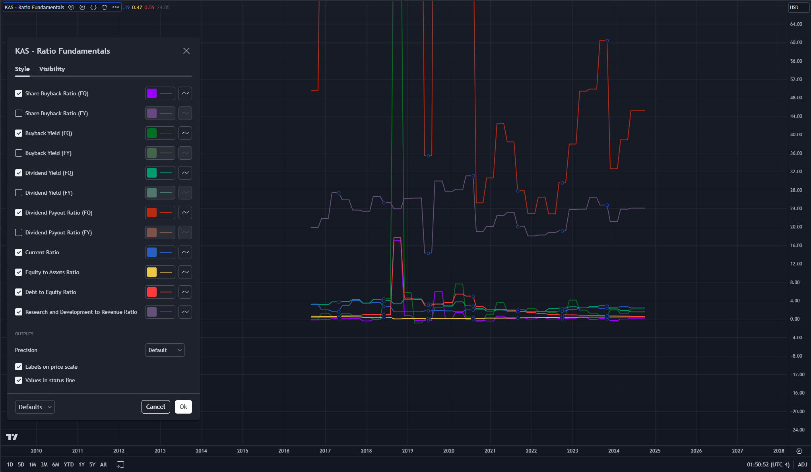
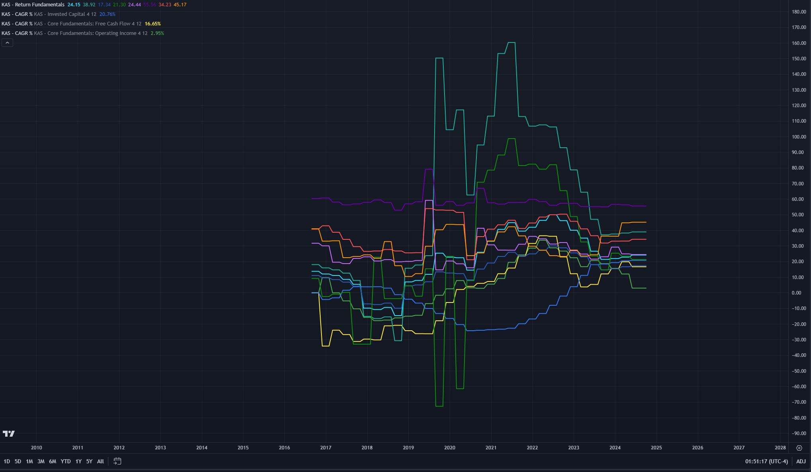

KAS
Website: https://www.tradingview.com/
Developed an advanced suite of tools to aid myself in equity investment. Featured tools include DCF calculators, price calculators based on acquirer’s multiple/EPS, financial ratio and data visualizers, CAGR scripts, and more. Programmed in PineScript.
An overall representation of the entire suite. One of the core features is a built in DCF (discounted cash flow) calculator that is fully customizable. It helps determine intrinsic value per share to help isolate under and over valued equities.
This page includes an entire list of financial ratios which help judge the valuation of a business at a glance.
Over here we have most of the core financials that help you determine the cash flows of the business.
From here you can get a great overview of the balance sheet and invested capital.
On this page, we can grab some useful ratios based on the balance sheet and inflow vs outflow.
Lastly our ROIC and CAGR metrics are here which make it easier to determine the growth and decay rates of a business.